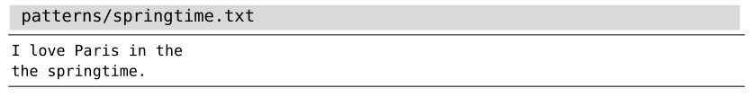

与:h 27.8）
与:h 27.8）技巧75使用圆括号捕获子匹配
当我们指定一个模式时，可以捕获其子匹配，并在其他地方引用它们。此功能与substitute命令组合起来尤为好用，但它也可用于定义某一类模式，这类模式的特点是 重复包含某个单词。
来看一下这段文本：

你能指出其中的语法错误吗？由于我们的大脑耍了一个小把戏，我们会惊讶地发现很难指出问题所在。但是如果这样把句子写出来，出错的地方一下子就出来了：“Paris in the the springtime.”。当换行符把两个重复的单词分隔开后，我们的大脑往往会忽略重复的那个词。这就是所谓的“词法幻觉”。(1)
这有一个专门用来匹配重复单词的正则表达式：
➾/\v<(\w+)\_s+\1>
现在请试着在上面的文本中查找这个模式，你会发现“the the”作为一处查找匹配被高亮起来。现在再试着将两行文本连接起来（使用vipJ命令），你会发现此模式仍然会匹配。更棒的是，这个模式不仅仅只匹配“the the”，而且对所有成对出现的重复单词都有效。让我们把这个正则表达式拆开来，看看它是怎样工作的。我们之所以能两次匹配相同的单词，诀窍就在于()与\1的组合使用。任何圆括号内部的匹配文本都会被自动保存到一个临时的仓库。我们可以用\1引用这段被捕获的文本。如果模式中包含不止一组圆括号，则可以用\1、\2，直到\9，引用被每对()捕获的子匹配。另外，不论模式中是否使用了圆括号，元字符 \0永远会引用整个匹配。
这个用于匹配词法幻觉的正则表达式还包含许多其他诀窍。首先，我们在技巧73中已经看到，\v模式开关会激活very magic搜索模式。另外，<与 > 两符号将用于匹配单词的边界，这一点将在技巧76中加以讨论。最后，元字符\_s会匹配空白符或换行符（分别参见:h /\_与:h 27.8）
在查找模式中使用子匹配的场景并不太多。我又想起来另外一个例子，即配XML或者HTML中标签的开闭对。另外，正如我们将在技巧93中所看到的那样，还可以在:substitute命令的替换域{string}中使用子匹配。